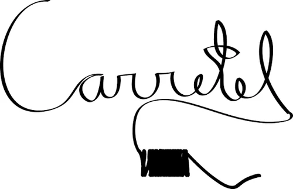
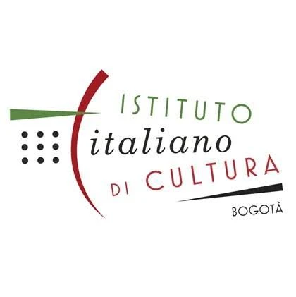
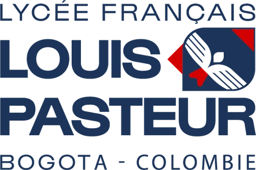
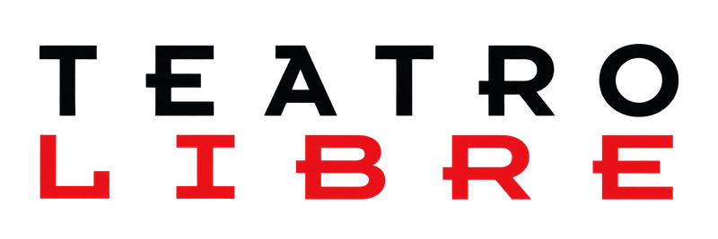
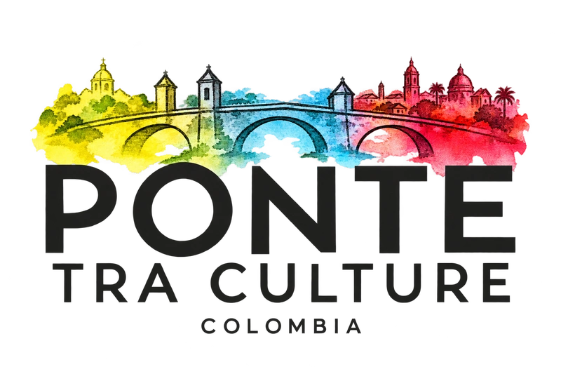
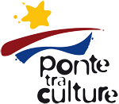
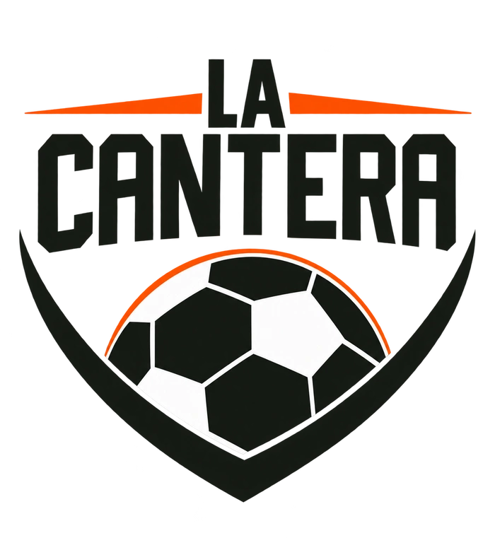
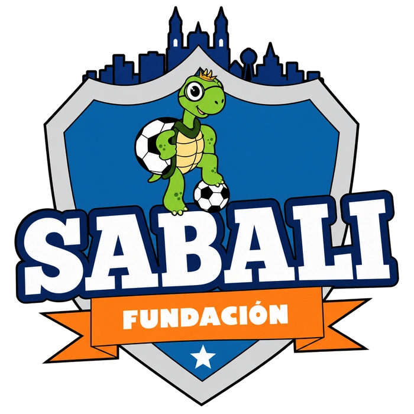
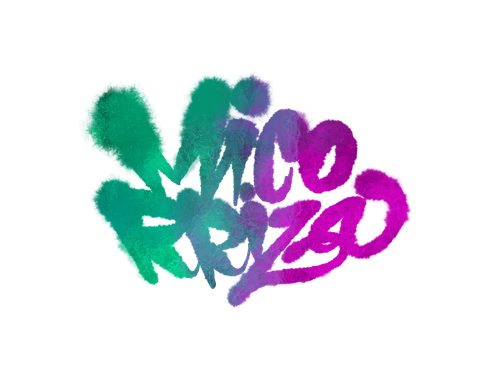

El manifiesto
Somos una compañía de artistas que trabaja desde el encuentro, el entrenamiento, la creación y el pensamiento colectivo. Exploramos lenguajes contemporáneos con el cuerpo, la voz y la transdisciplinariedad, para construir experiencias escénicas que interpelan nuestro presente.
La Gruta es un nicho labrado por la insistencia de las gotas.
Queremos crear, acompañar, atravesar, estudiar. Mirarnos con respeto y sin desdén. Aprender en comunidad y compartir herramientas, lenguajes y preguntas.
Creemos en las danzas obstinadas y los ejercicios que transforman. Para nosotros la transmisión no se impone, no se domestica: se cultiva, se cuida, se cocina y se deja ir.
Somos caverna, cueva y hogar.
Como creadores vivimos lo pequeño universal. Como artistas, el puente entre lo hondo y lo sutil. Nos preguntamos cómo habitar este tiempo de tránsito brutal y cómo revelar los espacios que todavía pueden ser.
Desde Cuerpo Contexto, reconocemos el cuerpo como un territorio de historias, memorias y relaciones. Esas experiencias son el punto de partida para crear con otras personas y comunidades.
Valentina y Francisco · Nuestra trayectoria
La Gruta nace del encuentro entre dos artistas colombianos: Valentina Blando, maestra en Arte Dramático del Teatro Libre, y Francisco Villamizar, maestro en Artes Escénicas de la Universidad Javeriana y formado como actor con el Teatro de la Memoria. Después de años de trabajo en distintos colectivos, deciden juntar sus preguntas para desarrollar proyectos de creación, investigación y pedagogía desde una mirada posdisciplinar, alrededor del cuerpo, la voz, el cuidado y la construcción de paz.
Valentina es actriz, cantante, pedagoga e investigadora vocal. Francisco es actor, pedagogo, investigador de las prácticas de entrenamiento actoral, gestor y productor cultural. Sus trayectorias individuales han recibido becas y reconocimientos y han circulado por distintos países de Latinoamérica.
Desde Bogotá, La Gruta busca enraizarse en el territorio para imaginar otros modos de hacer, aprender y vivir juntos: crear, fuera del mundo que existe, el que podría existir.
Lo que vamos construyendo
De este encuentro nacen ¿De quién es esta época, Pasolini?, La Costra —a partir de cuentos de Roald Dahl— y el repertorio de voces y acordeón Brisa Volcánica. También el Laboratorio de Teatro Italiano, en alianza con Ponte tra Culture y el Istituto Italiano di Cultura; la investigación Portulanos; los laboratorios de construcción de paz Reparar con los pies y el proceso de creación La Cocina.
El repertorio también incluye Orestiada, Kairós, Emergencia, I Giganti della Montagna, Questi Fantasmi y Où sont les enfants ?.
Aliadxs








